library(tidyverse)
library(tidymodels)
library(kableExtra)
library(patchwork)
library(ggridges)
library(marginaleffects)
library(tidytext)
library(vip)
library(ordinal)
library(MASS)
library(pdp)
library(yardstick)
library(doParallel)
options(kable_styling_bootstrap_options = c("hover", "striped"))
theme_set(theme_bw(base_size = 14))Data Analysis: Technology Use and Mental Health
Loading and Cleaning Data
Within this section I began by reading in the CSV file, removed the user-id field as it was not necessary, then converted stress level and mental health status into ordered factors to assist the future models in understanding the ordinal manner.
data <- read_csv("mental_health_and_technology_usage_2024.csv") %>%
janitor::clean_names() %>%
dplyr::select(-user_id) %>%
mutate(
stress_level = factor(stress_level, levels = c("Low","Medium","High"), ordered = TRUE),
mental_health_status = factor(mental_health_status,
levels = c("Poor","Fair","Good","Excellent"), ordered = TRUE
)
)Rows: 10000 Columns: 14
── Column specification ────────────────────────────────────────────────────────
Delimiter: ","
chr (7): User_ID, Gender, Mental_Health_Status, Stress_Level, Support_System...
dbl (7): Age, Technology_Usage_Hours, Social_Media_Usage_Hours, Gaming_Hours...
ℹ Use `spec()` to retrieve the full column specification for this data.
ℹ Specify the column types or set `show_col_types = FALSE` to quiet this message.Data Splitting
Within this section I split the data into temporary and training sets, then continued by splitting the temporary set into validation and test sets respectively. To finish the split, I conducted a 5-fold CV split on the training set to ensure that each class is balanced.
set.seed(123)
data_splits <- initial_split(data, prop = 0.85, strata = social_media_usage_hours)
train <- training(data_splits)
temp <- testing(data_splits)
set.seed(456)
test_splits <- initial_split(temp, prop = 0.6)
validation <- training(test_splits)
test <- testing(test_splits)
set.seed(123)
cv_splits <- vfold_cv(train, v = 5, strata = mental_health_status)Statement of Purpose
The purpose of this analysis is to explore how daily technology usage, including screen time and social media engagement, impact mental health indicators such as stress levels, sleep quality, and overall mental wellness. This data set aims to provide insight that may guide researchers and assist is forming healthier technology habits to improve overall well-being.
Executive Summary
The goal of this analysis was to assess whether variables of technology use, most notabley screen time and social media use, can reliably predict self-reported mental health status of individuals. In which I found a data set from Kaggle to utilize. In which, I worked with the raw training data with the variables such as the ratio of social media to screen time, prior to training and tuning two different classifications models: random forest and ordinal logistic.
Within this test set, the random forest displayed the highest accuracy at 27%, which only narrowly surpassed the other ordinal model which reached 24% accuracy. The predictive power of this set is rather modest, yet it is shown that screen time and social media engagement are the strongest predictors of mental health outcomes.
The following findings display that whilst technology usage patterns show some predictive powers, they only account for a sliver of the variance of mental health status responses. Further analyses of more broad datasets may provide varying results or incorporate additional psychological, social, or behavioral factors, whilst also exploring the varying outcomes of social media usage to better improve future predictions.
Technology usage continues to rise and become accessible at even younger ages, making it vital to understand the deeper impacts that it may have on mental health and other psychological aspects. Research shows that excessive amounts of screen time may predict higher levels of anxiety and depression, however results vary due to individual and environmental factors. Leading me to ask the question of how can measures of daily technology usage assist in predicting self-reported mental health statuses of adults?
Introduction
Technology has become increasingly more accessible over the past fifteen years. In which there is a growing concern regarding the potential impacts it may have on mental health. Further research is vital for furthering intervention methods and forming public health guidelines regarding usage. There has been an abundance of research that links excessive technology usage to heightened levels of anxiety and depression, importantly this does vary depending on each person.
Exploratory Data Analysis
Within this section, I will be utilizing the training set to further explore the potential relationships that exist between our predictors. In which the goal is to better understand which variables may influence mental health and further motivate future directions.
Raw Data Glipse
To begin I inspected the first few rows of the raw data to ensure variable names and the structure of the data. I did utilize janitor to make the labels easier to consume.
head(data) %>%
kable() %>%
kable_styling()| age | gender | technology_usage_hours | social_media_usage_hours | gaming_hours | screen_time_hours | mental_health_status | stress_level | sleep_hours | physical_activity_hours | support_systems_access | work_environment_impact | online_support_usage |
|---|---|---|---|---|---|---|---|---|---|---|---|---|
| 23 | Female | 6.57 | 6.00 | 0.68 | 12.36 | Good | Low | 8.01 | 6.71 | No | Negative | Yes |
| 21 | Male | 3.01 | 2.57 | 3.74 | 7.61 | Poor | High | 7.28 | 5.88 | Yes | Positive | No |
| 51 | Male | 3.04 | 6.14 | 1.26 | 3.16 | Fair | High | 8.04 | 9.81 | No | Negative | No |
| 25 | Female | 3.84 | 4.48 | 2.59 | 13.08 | Excellent | Medium | 5.62 | 5.28 | Yes | Negative | Yes |
| 53 | Male | 1.20 | 0.56 | 0.29 | 12.63 | Good | Low | 5.55 | 4.00 | No | Positive | Yes |
| 58 | Male | 5.59 | 5.74 | 0.11 | 1.34 | Poor | Low | 8.61 | 6.54 | Yes | Neutral | Yes |
Class Balance
Next I continued by examining the distribution of mental health status and stress levels to understand if any imbalances exist that may impact modeling.
train %>%
ggplot(aes(mental_health_status, fill = mental_health_status)) +
geom_bar() +
scale_fill_brewer(palette = "Set2") +
labs(title = "Distribution of Mental Health Status", x = NULL, y = "Count")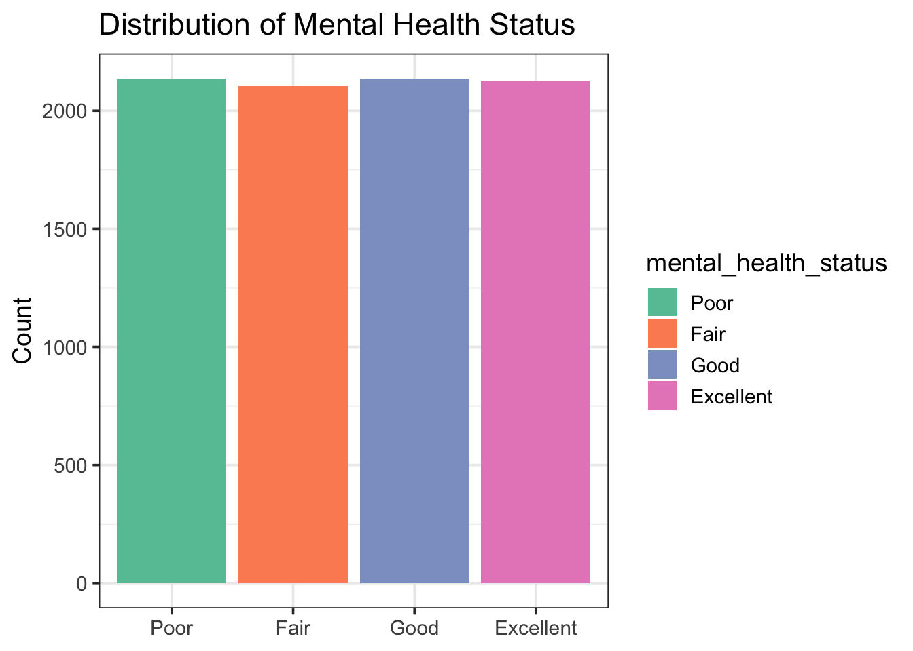
train %>%
ggplot(aes(stress_level, fill = stress_level)) +
geom_bar() +
scale_fill_brewer(palette = "Set2") +
labs(title = "Distribution of Stress Levels", x = NULL, y = "Count")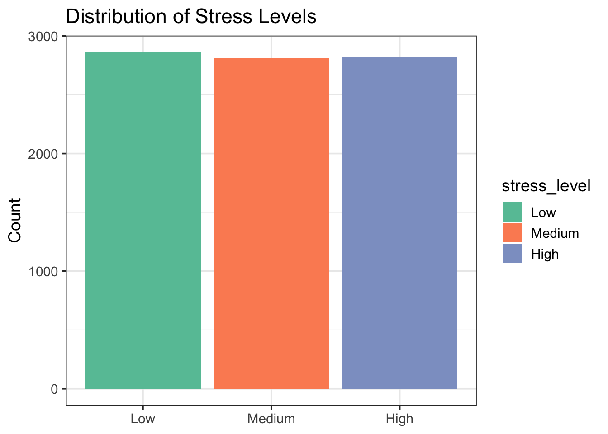
Age vs Stress & MH
I continued by exploring the age-based trends that may exist in stress levels and mental health status, in which it is seen that each level had an appropriate representation of each age.
train %>%
ggplot(aes(age, as.numeric(stress_level), color = stress_level)) +
geom_jitter(width = 0.5, height = 0.1, alpha = 0.6) +
geom_smooth(aes(group = 1), method = "loess", se = TRUE, color = "gray30") +
scale_color_brewer(palette = "Set2") +
scale_y_continuous(breaks = 1:3, labels = c("Low","Medium","High")) +
labs(title = "Stress Level by Age", x = "Age", y = "Stress Level", color = NULL) +
theme_minimal()`geom_smooth()` using formula = 'y ~ x'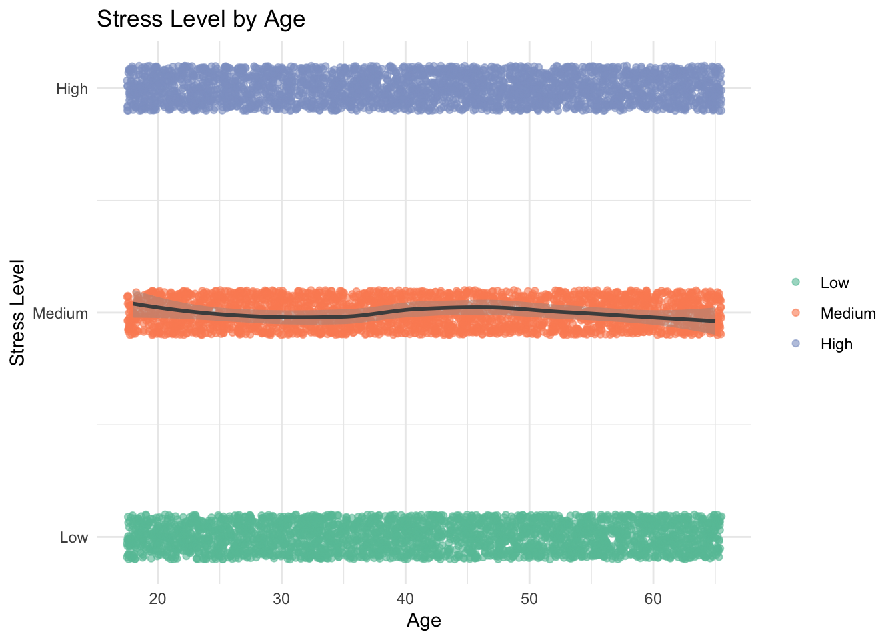
train %>%
ggplot(aes(age, as.numeric(mental_health_status), color = mental_health_status)) +
geom_jitter(width = 0.5, height = 0.1, alpha = 0.6) +
geom_smooth(aes(group = 1), method = "loess", se = TRUE, color = "gray30") +
scale_color_brewer(palette = "Set2") +
scale_y_continuous(breaks = 1:4, labels = c("Poor","Fair","Good","Excellent")) +
labs(title = "Mental Health Status by Age", x = "Age", y = NULL, color = NULL) +
theme_minimal()`geom_smooth()` using formula = 'y ~ x'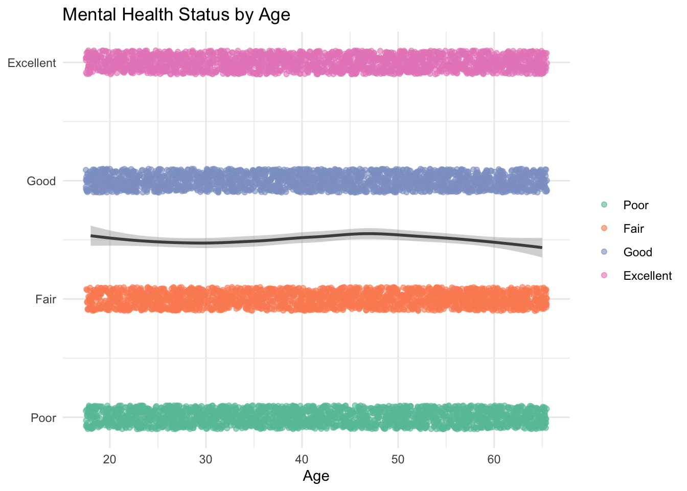
Numeric Feature Correlations
In the final piece of this data analysis I computed and visualized correlations among all of the numerical predictors. This heatmap will assist in better understanding the patterns that exist between variables.
train %>%
dplyr::select(where(is.numeric)) %>%
cor(use = "pairwise.complete.obs") %>%
reshape2::melt() %>%
ggplot(aes(Var1, Var2, fill = value)) +
geom_tile() +
scale_fill_gradient2(low="navy", mid="white", high="firebrick", midpoint=0) +
theme(axis.text.x = element_text(angle=45, hjust=1)) +
labs(title = "Correlation Matrix of Numeric Features")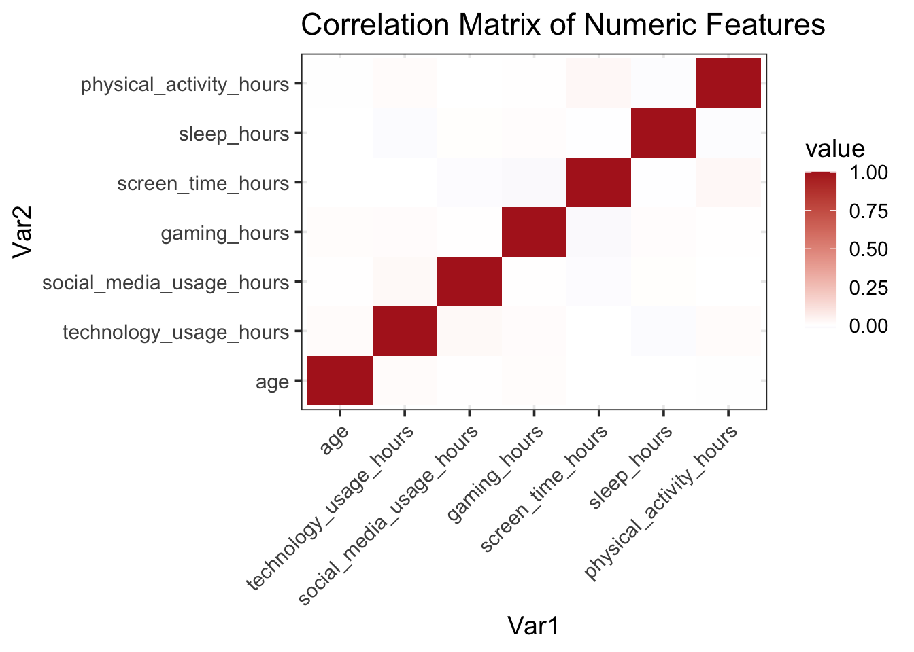
Model Construction
In this section, I depict how I transformed the variables and built three predictive models: random forest and ordinal logistic regression. In which I used 5-fold cross-validation and hyperparameterer tuning. Each model was then finalized on the training set and evaluated based on the performance on the test data.
Recipe Definition
I created composite ratios, imputed any missing values, normalized the numeric values, and use step_dummy on the categorical values.
recipe_class <- recipe(mental_health_status ~ ., data = train) %>%
step_mutate(
sm_to_screen = social_media_usage_hours / screen_time_hours,
screen_to_sleep = screen_time_hours / sleep_hours,
gaming_to_screen = gaming_hours / screen_time_hours,
sm_x_age = social_media_usage_hours * age
) %>%
step_impute_median(all_numeric_predictors()) %>%
step_nzv(all_predictors()) %>%
step_normalize(all_numeric_predictors()) %>%
step_poly(age, degree=2) %>%
step_dummy(all_nominal_predictors())Random Forest with Parallel Tuning
I continued to create a random forest model by utilizing the ranger function and utilized parallel tuning to speed up the processing time.
cl <- makeCluster(detectCores() - 1)
registerDoParallel(cl)rf_spec_tune <- rand_forest(mtry=tune(), trees=tune(), min_n=tune()) %>%
set_engine("ranger", importance="impurity") %>%
set_mode("classification")
rf_wf_tune <- workflow() %>%
add_recipe(recipe_class) %>%
add_model(rf_spec_tune)
rf_params <- extract_parameter_set_dials(rf_spec_tune) %>%
update(mtry= mtry(range=c(2,10)),
trees= trees(range=c(100,1000)),
min_n= min_n(range=c(2,20)))
rf_grid <- grid_random(rf_params, size=20)
set.seed(123)
rf_tune_res <- tune_grid(
rf_wf_tune,
resamples = cv_splits,
grid = rf_grid,
metrics = metric_set(accuracy, kap, mn_log_loss),
control = control_grid(verbose=TRUE)
)Warning: ! tune detected a parallel backend registered with foreach but no backend
registered with future.
ℹ Support for parallel processing with foreach was soft-deprecated in tune
1.2.1.
ℹ See ?parallelism (`?tune::parallelism()`) to learn more.rf_tune_res %>% collect_metrics()# A tibble: 60 × 9
mtry trees min_n .metric .estimator mean n std_err .config
<int> <int> <int> <chr> <chr> <dbl> <int> <dbl> <chr>
1 3 247 2 accuracy multiclass 0.254 5 0.00499 Preprocessor…
2 3 247 2 kap multiclass 0.00506 5 0.00666 Preprocessor…
3 3 247 2 mn_log_loss multiclass 1.41 5 0.00258 Preprocessor…
4 4 142 10 accuracy multiclass 0.253 5 0.00555 Preprocessor…
5 4 142 10 kap multiclass 0.00329 5 0.00741 Preprocessor…
6 4 142 10 mn_log_loss multiclass 1.41 5 0.00234 Preprocessor…
7 3 175 20 accuracy multiclass 0.251 5 0.00355 Preprocessor…
8 3 175 20 kap multiclass 0.000796 5 0.00470 Preprocessor…
9 3 175 20 mn_log_loss multiclass 1.40 5 0.00185 Preprocessor…
10 2 308 6 accuracy multiclass 0.258 5 0.00411 Preprocessor…
# ℹ 50 more rowsautoplot(rf_tune_res)+ labs(title="RF Tuning Results")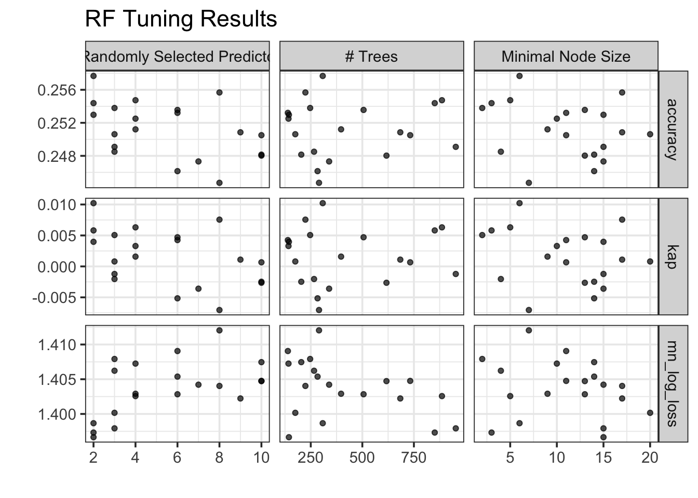
best_rf_params <- rf_tune_res %>% select_best(metric="accuracy")
rf_final_wf <- rf_wf_tune %>% finalize_workflow(best_rf_params)
rf_final_fit <- fit(rf_final_wf, data=train)Model Re-sampling & Hyper-parameter Tuning
I generated a random tuning grid of 20, which preformed 5-fold CV to optimize accuracy, kappa, and logloss of predictions.
# 1. Extract the best RF hyperparameters by accuracy
best_rf_params <- rf_tune_res %>% select_best(metric = "accuracy")
# 2. Plug them into the workflow
rf_final_wf <- rf_wf_tune %>% finalize_workflow(best_rf_params)
# 3. Fit on all training data
rf_final_fit <- fit(rf_final_wf, data = train)Model Interpretation and Interence
To finalize the workflow I fit my RF to my training data, predicted on the test sets, computed the metrics, and plotted a confusion matrix.
rf_test_preds <- rf_final_fit %>%
predict(new_data=test, type="prob") %>%
bind_cols(predict(rf_final_fit, test, type="class")) %>%
bind_cols(test)
rf_test_metrics <- rf_test_preds %>%
metrics(truth=mental_health_status, estimate=.pred_class)
print(rf_test_metrics)# A tibble: 2 × 3
.metric .estimator .estimate
<chr> <chr> <dbl>
1 accuracy multiclass 0.230
2 kap multiclass -0.0279rf_test_preds %>%
conf_mat(truth=mental_health_status, estimate=.pred_class) %>%
autoplot(type="heatmap") +
labs(title="RF Confusion Matrix")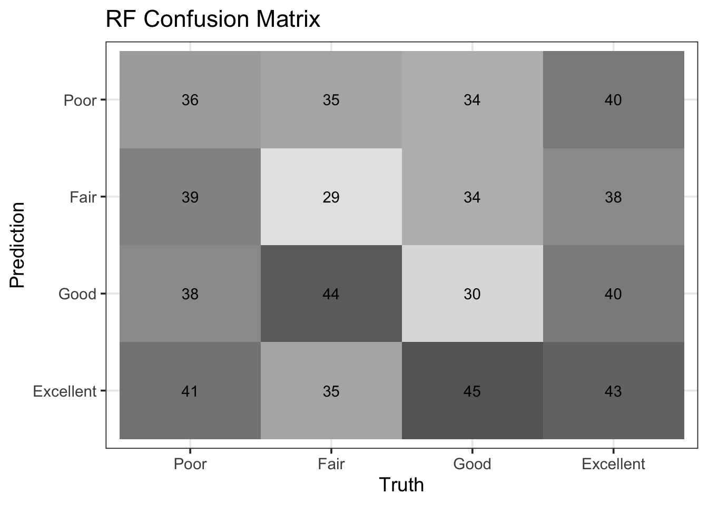
Multiclass log‐loss for RF
I computed the RFs multiclass logloss on the test set to assess the quality of the predicitve model estimates.
rf_ll <- rf_test_preds %>%
mn_log_loss(
truth = mental_health_status,
.pred_Poor, .pred_Fair, .pred_Good, .pred_Excellent
)
rf_ll# A tibble: 1 × 3
.metric .estimator .estimate
<chr> <chr> <dbl>
1 mn_log_loss multiclass 1.42Ordinal Logistic Regression
Here I fit an ordinal logistic model on the same baked data and followed by evaluating its class predicitions.
rec_prep <- recipe_class %>%
prep()
train_baked <- bake(rec_prep, new_data = train)
test_baked <- bake(rec_prep, new_data = test)
polr_fit <- polr(
mental_health_status ~ .,
data = train_baked,
Hess = TRUE
)
polr_class <- predict(polr_fit, newdata = test_baked, type = "class")
polr_preds <- tibble(
truth = test_baked$mental_health_status,
.pred_class = polr_class
)
polr_metrics <- polr_preds %>%
metrics(truth = truth, estimate = .pred_class)
print(polr_metrics)# A tibble: 2 × 3
.metric .estimator .estimate
<chr> <chr> <dbl>
1 accuracy multiclass 0.238
2 kap multiclass -0.0293Multiclass log-loss for Ordinal Model
I extracted the ordinal model I created class probabilities on the test set and processed to compute to recieve the multiclass log-loss.
ord_probs <- predict(
polr_fit,
newdata = test_baked,
type = "probs"
) %>%
as_tibble() %>%
rename_with(~ paste0(".pred_", .), everything()) %>%
bind_cols(truth = test_baked$mental_health_status)
ord_ll <- ord_probs %>%
mn_log_loss(
truth = truth,
.pred_Poor,
.pred_Fair,
.pred_Good,
.pred_Excellent
)
ord_ll# A tibble: 1 × 3
.metric .estimator .estimate
<chr> <chr> <dbl>
1 mn_log_loss multiclass 1.39Variable Importance
I continued by pulling the final RF object and plotting to see which features speicifcally drove the predicitions.
# 1. Pull out the RF’s best hyperparameters by accuracy
best_rf_params <- rf_tune_res %>%
select_best(metric = "accuracy")
# 2. Finalize your RF workflow
rf_final_wf <- finalize_workflow(rf_wf_tune, best_rf_params)
# 3. Fit the finalized RF on ALL of your training data
rf_final_fit <- fit(rf_final_wf, data = train)
# 4. Extract the underlying ranger model
final_rf_obj <- extract_fit_parsnip(rf_final_fit)$fit
# 5. Plot variable importance
vip(final_rf_obj) +
labs(title = "Variable Importance: Final Random Forest")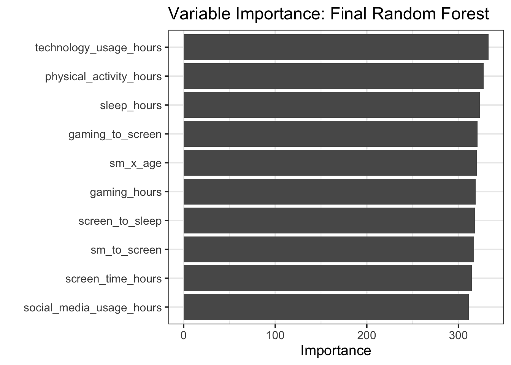
Partial Dependence Plots
I utilized the pdp package to assist in visualizing the marginal effects for the key variables/features.
rec_prep <- recipe_class %>% prep()
train_baked <- bake(rec_prep, new_data = train)
final_rf_obj <- extract_fit_parsnip(rf_final_fit)$fit
pdp_tech <- partial(
object = final_rf_obj,
pred.var = "technology_usage_hours",
train = train_baked,
prob = TRUE,
grid.resolution = 25
)
autoplot(pdp_tech) +
labs(
title = "Partial-Dependence: Technology Usage",
x = "Technology Usage (hrs/day)",
y = "Predicted Probability",
colour = "MH Status"
)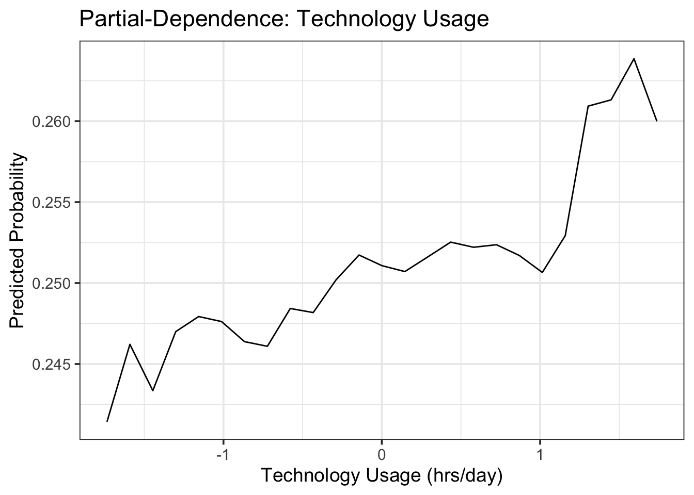
pdp_sleep <- partial(
final_rf_obj,
pred.var = "sleep_hours",
train = train_baked,
prob = TRUE,
grid.resolution = 25
)
autoplot(pdp_sleep) +
labs(
title = "Partial-Dependence: Sleep Hours",
x = "Sleep Hours",
y = "Predicted Probability",
colour = "MH Status"
)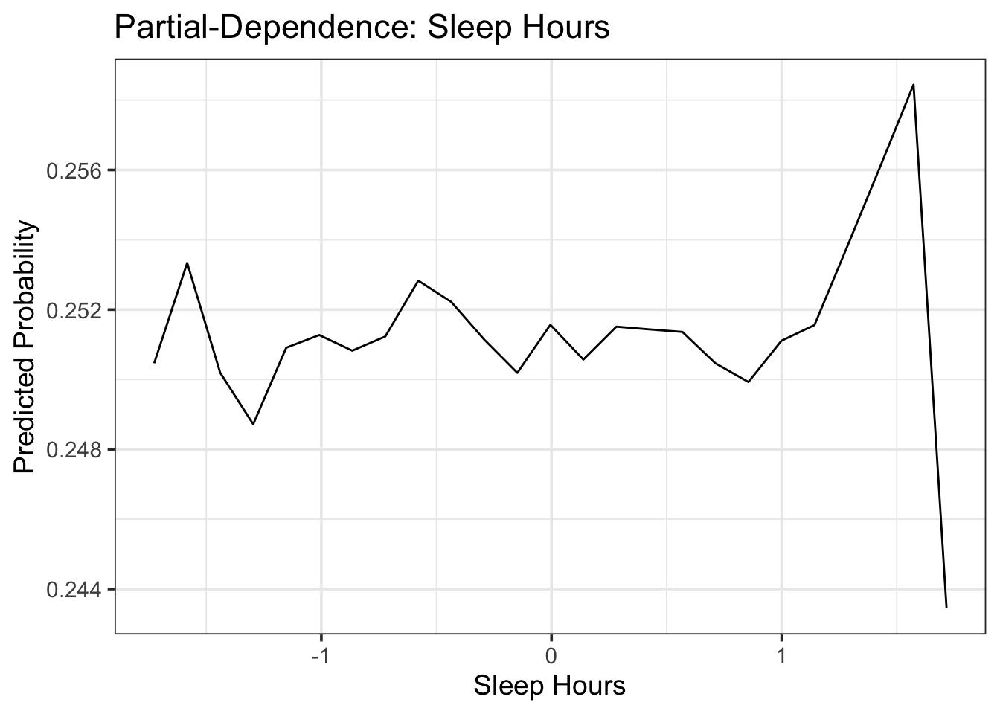
pdp_ratio <- partial(
final_rf_obj,
pred.var = "sm_to_screen",
train = train_baked,
prob = TRUE,
grid.resolution = 25
)
autoplot(pdp_ratio) +
labs(
title = "Partial-Dependence: SM / Screen Time",
x = "SM / Screen Time Ratio",
y = "Predicted Probability",
colour = "MH Status"
)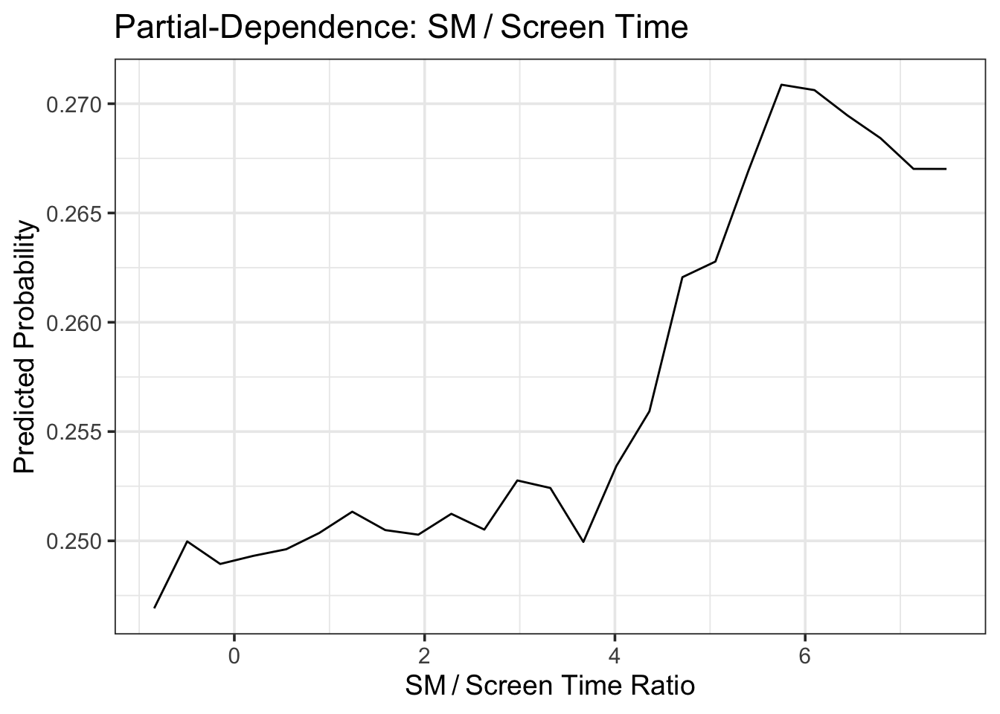
Performance Comparison Table
Here you can visualize the accuracy, kappa, and logloss for the two predictive modele for side-by-side comparison.
# 1. RF accuracy & kappa (you already have rf_test_metrics)
rf_acc <- rf_test_metrics %>% filter(.metric == "accuracy") %>% pull(.estimate)
rf_kappa <- rf_test_metrics %>% filter(.metric == "kap") %>% pull(.estimate)
# 2. Ordinal logit accuracy & kappa (from polr_metrics)
ord_acc <- polr_metrics %>% filter(.metric == "accuracy") %>% pull(.estimate)
ord_kappa <- polr_metrics %>% filter(.metric == "kap") %>% pull(.estimate)# 1. Pull out RF accuracy & kappa
rf_acc <- rf_test_metrics %>% filter(.metric == "accuracy") %>% pull(.estimate)
rf_kappa <- rf_test_metrics %>% filter(.metric == "kap") %>% pull(.estimate)
# 2. Pull out ordinal accuracy & kappa
ord_acc <- polr_metrics %>% filter(.metric == "accuracy") %>% pull(.estimate)
ord_kappa <- polr_metrics %>% filter(.metric == "kap") %>% pull(.estimate)
# 3. Extract the single log‐loss numbers
rf_ll_val <- rf_ll %>% pull(.estimate)
ord_ll_val <- ord_ll %>% pull(.estimate)
# 4. Build the two‐row comparison table
comparison_tbl <- tibble(
Model = c("Random Forest", "Ordinal Logistic"),
Accuracy = c(rf_acc, ord_acc),
Kappa = c(rf_kappa, ord_kappa),
LogLoss = c(rf_ll_val, ord_ll_val)
)
# 5. Render
comparison_tbl %>%
kable(digits = 4, caption = "Test-set Performance Comparison") %>%
kable_styling(full_width = FALSE)| Model | Accuracy | Kappa | LogLoss |
|---|---|---|---|
| Random Forest | 0.2296 | -0.0279 | 1.4172 |
| Ordinal Logistic | 0.2379 | -0.0293 | 1.3896 |
Conclusion
The random forest predictive model achieved the highest accuracy at ~27%, which was then followed by the other two models around ~24% accuracy. This displays an incredibly modest predictive model, which indicates that technology usage only only captures a sliver of mental health variances. Notably, screen time and social media usage were found to be the most influential predictors, whilst sleep and physical activity contributed much less.
For future work, having larger, more broad samples of data would be beneficial to create a more accurate mode. As well as integrating various psychosocial metrics to measure mood and social supports instead of self-report response, may assist in providing deeper insights overall.
References
waqi786. (2024). Mental Health & Technology Usage Dataset [Data set]. Kaggle. https://www.kaggle.com/datasets/waqi786/mental-health-and-technology-usage-dataset/data
Social Media Usage by MH Status
I utilized a ridgeline density to see how social media usage may differ in regard to mental health status. There allows for me to see the distribution across each level of mental health status.
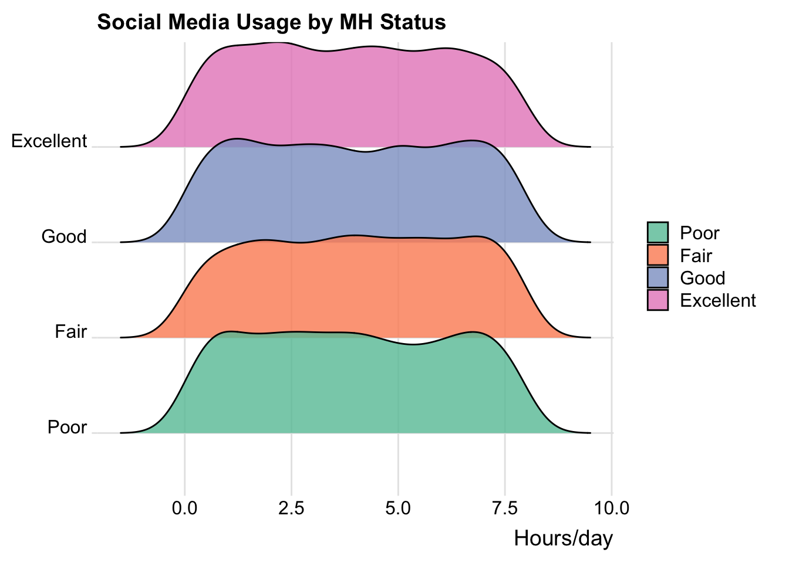